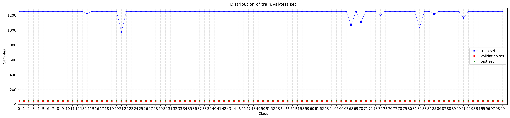

Train set: 123,982 images (~96% of total images).Validation set: 5,000 images (~4% of total images, fixed 50 images/class).Test set: 5,000 images (~4% of total images, fixed 50 images/class).Split ratio: Train : Validation : Test = 0.92 : 0.04 : 0.04
Data preprocessing and augmentation pipeline for training with PyTorch:
| Configuration | Train Set | Validation / Test Set |
|---|---|---|
| Input Image size | 224 × 224 | 224 × 224 |
| Batch Size | 32/64/128 | 32/64/128 |
| Shuffle & Workers | Shuffle = True, num_workers = 4/8 |
Shuffle = False, num_workers = 4/8 |
| Pin Memory & Drop Last | pin_memory = True, drop_last = True |
pin_memory = True, drop_last = False |
| Augmentation Pipeline |
|
|
The experiments are set up consistently to compare the two architecture families ResNet-50 (CNN) and ViT-B/16 (Transformer) across weight initialization modes and freeze levels based on the pretrained model:
PyTorch, GPU NVIDIA RTX 3500 Resnet50 (PyTorch), ViT-B/16 (PyTorch) (lr = TBU, weight_decay = TBU) lr = TBU TBU| Ver. | Model | Initialize weights | Training Strategy | Freeze Level Details |
|---|---|---|---|---|
| 1 | ResNet-50 / ViT | Random Initialization | From-Scratch | Unfreeze 100% of parameters (Train from scratch). |
| 2 | ResNet-50 / ViT | Pretrained | Freeze Full Backbone | Freeze the entire Backbone, only train the Linear Classifier Head. |
| 3 | ResNet-50 / ViT | Pretrained | Partial Freeze | Partial freeze (Freeze Layers 1-3 of ResNet or the first 6 Transformer Blocks of ViT). |
| 4 | ResNet-50 / ViT | Pretrained | Full Fine-tune | Unfreeze the entire network and fine-tune with a small Learning Rate. |
The test results are based on the model trained with the highest validation accuracy.
Summary table of experimental data:
| Architecture | Configuration / Freeze Level | Trainable Params | Val Accuracy Top-1 (%) | Test Accuracy Top-1 (%) | Macro F1-Score | Time (s/epoch) |
|---|---|---|---|---|---|---|
| ResNet-50 (CNN) |
From-scratch | TBU | --.--% | --.--% | 0.---- | -- s |
| Pretrained - Freeze Full Backbone | TBU | --.--% | --.--% | 0.---- | -- s | |
| Pretrained - Freeze Partial (Layer 1-3) | TBU | --.--% | --.--% | 0.---- | -- s | |
| Pretrained - Full Fine-tune | TBU | --.--% | --.--% | 0.---- | -- s | |
| ViT-B/16 (Transformer) |
From-scratch | TBU | --.--% | --.--% | 0.---- | -- s |
| Pretrained - Freeze Full Backbone | TBU | --.--% | --.--% | 0.---- | -- s | |
| Pretrained - Freeze Partial (Block 1-6) | TBU | --.--% | --.--% | 0.---- | -- s | |
| Pretrained - Full Fine-tune | TBU | --.--% | --.--% | 0.---- | -- s |
Visual comparison of the confusion matrix and representative misclassified examples between the two architecture families on the Test/Validation set: